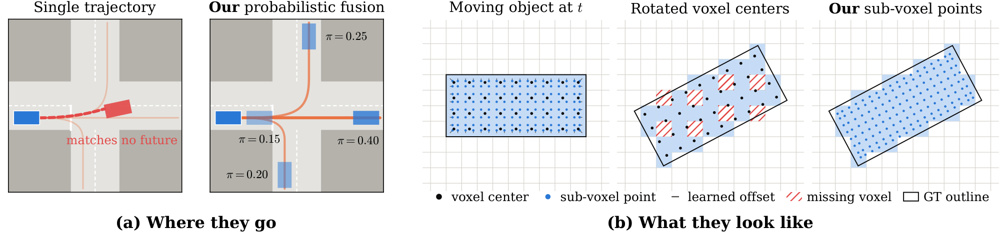
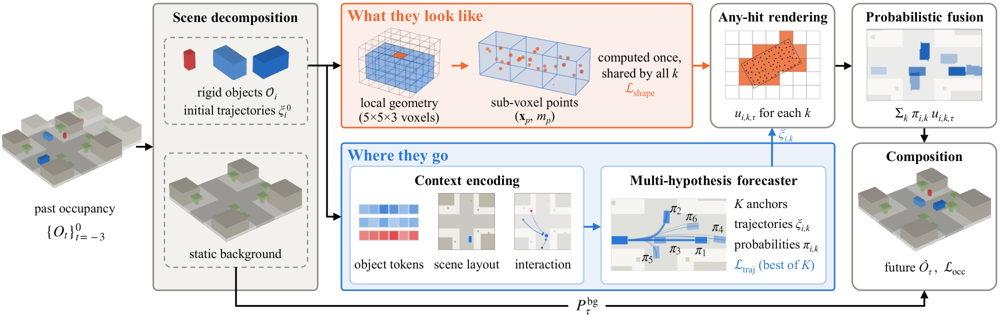
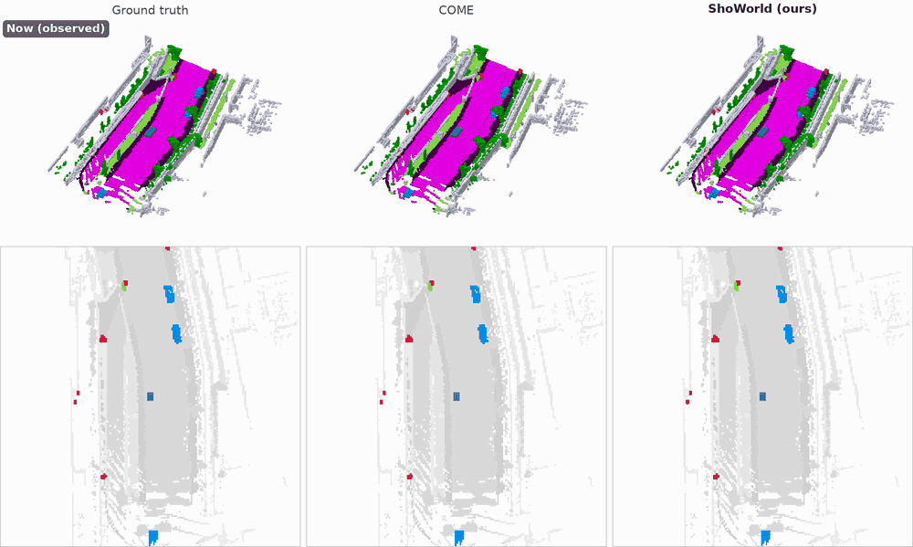

Occupancy world models struggle to forecast moving objects due to motion uncertainty and shape distortion. A single trajectory can average plausible futures into an implausible path, and repeated re-voxelization can erode or inflate object shape even under correct motion. We introduce ShoWorld to address these challenges through separate motion and shape representations. The motion forecaster predicts probabilistic trajectories conditioned on scene layout, nearby agents and the future ego trajectory. Each hypothesis is rendered into occupancy and fused according to its probability to retain alternative futures. The shape component predicts sub-voxel points with occupancy probabilities and offsets from local geometry. These points move rigidly with the object, and voxel occupancy follows the probability that at least one occupied point falls within it. This representation reduces shape distortion under motion. ShoWorld achieves state-of-the-art results on Occ3D-nuScenes. With ground-truth occupancy and ego trajectory, it improves mIoU and IoU by 6.56 and 9.16 points overall and by 6.06 and 5.53 points on dynamic classes.

Motion uncertainty and shape preservation. (a) Voxel-wise supervision can pull a single trajectory between plausible futures; our fusion retains each hypothesis with its probability. (b) Re-voxelization of rotated voxel centers leaves holes; sub-voxel points keep the shape covered (offsets illustrated).

Overview of ShoWorld. The scene is decomposed into a static background and rigid objects grouped from the current occupancy. Each object predicts K trajectories with probabilities from the layout, nearby agents, and the ego vehicle. Its sub-voxel points, inferred once from local geometry, are rendered under every hypothesis, fused by the probabilities, and composited over the background.

Validation set, 3D occupancy input with the ground-truth ego trajectory. Columns: ground truth, the compared method, ShoWorld. Top: full scene in 3D (Occ3D colors). Bottom: bird's-eye view zoomed on the moving objects, static scene in gray, with the dynamic-class IoU of each frame. Scenes were selected to show clear differences between the methods.
@article{yan2026showorld,
title={ShoWorld: Shape-Faithful Multi-Hypothesis Occupancy World Model},
author={Yan, Zhiqiang and Wang, Guangfa and Wu, Yuan and Yang, Jian and Lee, Gim Hee},
journal={arXiv preprint arXiv:2611.24457},
year={2026}
}For any questions, please contact yanzq@nus.edu.sg